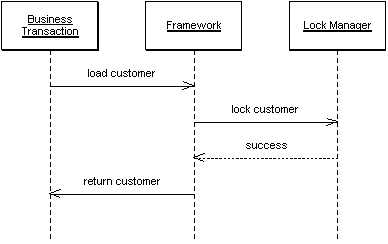

Implicit Lock (Скрытая блокировка)

Паттерн проектирования Implicit Lock
Описание Implicit Lock
Позволяет коду фреймворка или супертипа уровня использовать локальные блокировки
Суть всех блокировок в том, что при их использовании нельзя делать исключений. Если забыть написать одну строку кода, которая вызывает блокировку, можно придти к полной бесполезности всей блокировочной схемы. Не вызвав блокировку на чтение, даже если остальные транзакции её используют, можно поставить под вопрос актуальность данных. В целом - если что-то может быть заблокировано где-то, оно должно блокироваться везде. Игнорируя это правило, блокировочные стратегии приложений рискуют целостностью данных. Если не завершить блокировку вовремя, то с данными ничего плохого не случится, однако, это приведёт к провалу производительности. Из-за сложности тестирования локальных блокировок, такие ошибки могут пройти все тесты и не быть обнаруженными
Единственное решение здесь - не дать разработчикам ошибиться. Задачи, использующие блокировки, которые не могут быть невыявленными, должны быть обработаны не явно для разработчика, но скрыто для приложения. А тот факт, что большинство приложений промышленного масштаба используют нектотрый набор фреймворков, Layer Supertype и генерацию кода, даёт большие возможности для внедрения паттерна Implicit Lock.
Реализация в популярных СУБД
PostgreSQL
PostgreSQL поддерживает скрытые блокировки через различные механизмы:
- Automatic Locking - автоматические блокировки
- Trigger-Based Locking - блокировки через триггеры
- Function-Based Locking - блокировки через функции
-- Создание функции с автоматической блокировкой
CREATE OR REPLACE FUNCTION update_user_with_lock(
user_id INTEGER,
new_name VARCHAR
) RETURNS BOOLEAN AS $$
BEGIN
-- Автоматическая блокировка строки
PERFORM * FROM users WHERE id = user_id FOR UPDATE;
-- Обновление данных
UPDATE users SET name = new_name WHERE id = user_id;
RETURN TRUE;
EXCEPTION
WHEN OTHERS THEN
RETURN FALSE;
END;
$$ LANGUAGE plpgsql;
-- Использование функции
SELECT update_user_with_lock(1, 'New Name');MySQL (InnoDB)
MySQL поддерживает скрытые блокировки через различные механизмы:
- Stored Procedures - хранимые процедуры
- Triggers - триггеры
- Functions - функции
-- Создание процедуры с автоматической блокировкой
DELIMITER //
CREATE PROCEDURE update_user_with_lock(
IN user_id INT,
IN new_name VARCHAR(100)
)
BEGIN
DECLARE EXIT HANDLER FOR SQLEXCEPTION
BEGIN
ROLLBACK;
RESIGNAL;
END;
START TRANSACTION;
-- Автоматическая блокировка строки
SELECT * FROM users WHERE id = user_id FOR UPDATE;
-- Обновление данных
UPDATE users SET name = new_name WHERE id = user_id;
COMMIT;
END //
DELIMITER ;
-- Использование процедуры
CALL update_user_with_lock(1, 'New Name');Oracle Database
Oracle предоставляет мощные механизмы для скрытых блокировок:
- PL/SQL Packages - пакеты PL/SQL
- Triggers - триггеры
- Functions - функции
-- Создание пакета с автоматической блокировкой
CREATE OR REPLACE PACKAGE user_locking AS
FUNCTION update_user_with_lock(
p_user_id NUMBER,
p_new_name VARCHAR2
) RETURN BOOLEAN;
END user_locking;
/
CREATE OR REPLACE PACKAGE BODY user_locking AS
FUNCTION update_user_with_lock(
p_user_id NUMBER,
p_new_name VARCHAR2
) RETURN BOOLEAN IS
BEGIN
-- Автоматическая блокировка строки
SELECT * FROM users WHERE id = p_user_id FOR UPDATE;
-- Обновление данных
UPDATE users SET name = p_new_name WHERE id = p_user_id;
COMMIT;
RETURN TRUE;
EXCEPTION
WHEN OTHERS THEN
ROLLBACK;
RETURN FALSE;
END;
END user_locking;
/
-- Использование пакета
SELECT user_locking.update_user_with_lock(1, 'New Name') FROM dual;SQL Server
SQL Server поддерживает скрытые блокировки через различные механизмы:
- Stored Procedures - хранимые процедуры
- Functions - функции
- Triggers - триггеры
-- Создание процедуры с автоматической блокировкой
CREATE PROCEDURE update_user_with_lock
@user_id INT,
@new_name NVARCHAR(100)
AS
BEGIN
SET NOCOUNT ON;
BEGIN TRY
BEGIN TRANSACTION;
-- Автоматическая блокировка строки
SELECT * FROM users WITH (UPDLOCK) WHERE id = @user_id;
-- Обновление данных
UPDATE users SET name = @new_name WHERE id = @user_id;
COMMIT TRANSACTION;
SELECT 1 AS result;
END TRY
BEGIN CATCH
ROLLBACK TRANSACTION;
SELECT 0 AS result;
END CATCH
END;
-- Использование процедуры
EXEC update_user_with_lock @user_id = 1, @new_name = 'New Name';SQLite
SQLite поддерживает скрытые блокировки через пользовательские механизмы:
- Custom Functions - пользовательские функции
- Triggers - триггеры
- Views - представления
-- Создание функции с автоматической блокировкой
CREATE TABLE user_locks (
user_id INTEGER PRIMARY KEY,
locked_at DATETIME DEFAULT CURRENT_TIMESTAMP
);
-- Создание триггера для автоматической блокировки
CREATE TRIGGER user_update_lock
BEFORE UPDATE ON users
BEGIN
INSERT OR REPLACE INTO user_locks (user_id, locked_at)
VALUES (NEW.id, CURRENT_TIMESTAMP);
END;
-- Обновление данных (блокировка происходит автоматически)
UPDATE users SET name = 'New Name' WHERE id = 1;Сравнение механизмов
| СУБД | Встроенная поддержка | Производительность | Простота реализации |
|---|---|---|---|
| PostgreSQL | Полная | Высокая | Высокая |
| MySQL | Полная | Высокая | Высокая |
| Oracle | Полная | Очень высокая | Высокая |
| SQL Server | Полная | Высокая | Высокая |
| SQLite | Частичная | Средняя | Средняя |
Рекомендации по выбору
- PostgreSQL - лучший выбор для веб-приложений с высокой конкурентностью
- MySQL - хороший баланс производительности и простоты
- Oracle - для корпоративных приложений с высокими требованиями
- SQL Server - для Windows-среды и .NET приложений
- SQLite - для встраиваемых приложений и прототипирования
Паттерны реализации
Framework-Based Locking
-- Автоматическая блокировка через фреймворк
@Entity
@Table(name = "users")
public class User {
@Id
private Long id;
@Version
private Integer version;
private String name;
// Автоматическая блокировка при обновлении
@PreUpdate
public void preUpdate() {
// Логика блокировки
}
}ORM-Based Locking
-- Автоматическая блокировка через ORM
class User < ActiveRecord::Base
# Автоматическая блокировка при обновлении
def update_with_lock(attributes)
with_lock do
update(attributes)
end
end
endService-Based Locking
-- Автоматическая блокировка через сервис
@Service
public class UserService {
@Transactional
public void updateUser(Long id, String name) {
// Автоматическая блокировка через транзакцию
User user = userRepository.findById(id);
user.setName(name);
userRepository.save(user);
}
}Использована иллюстрация с сайта Мартина Фаулера.